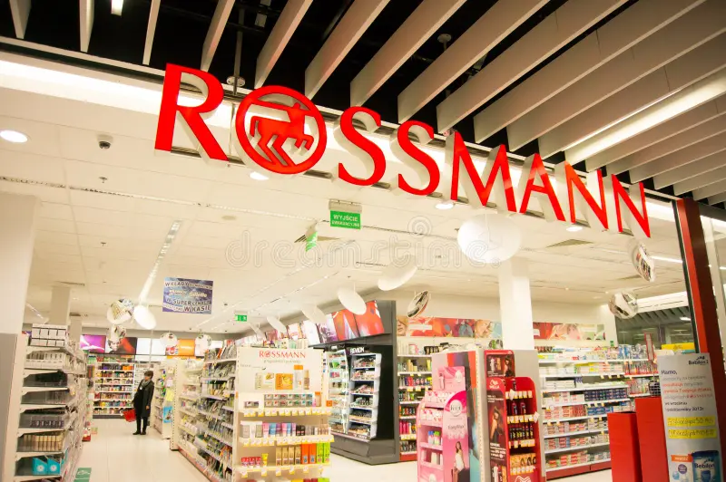

Rossmann Sales Forecast Using Machine Learning and Implementation via Telegram Bot
This data science project involves forecasting the sales of the Rossmann store for the next six weeks.
The process included feature engineering, exploratory data analysis (EDA), data preparation, and feature selection using the Boruta method. Linear regression, Random Forest Regressor, and XGBoost algorithms were trained, with finetuning performed using the Random Search method.
The predictive model was then validated and implemented in production through a Telegram bot, facilitating access to real-time forecasts from any mobile phone with internet access.
The tools used were:
- Python 3.8, Scikit-learn and Flask
- Performance metrics: Accuracy, Precision, Recall and F1-Score
- Regression algorithms: Linear Regression, Regressor, Random Forest Regressor, Polynomial Regression, Linear
Regression Lasso, Random Forest Regressor, XGBoost
- Performance metrics: RMSE, MAE and MAPE

Development of a Business Management Dashboard with Streamlit
In this project, Python programming concepts, data manipulation, strategic thinking and business logic were used, along with web development tools such as Streamlit and Github, to develop a management dashboard with the main metrics of a restaurant marketplace company.
The final result of the project was a dashboard hosted in a Cloud environment and made available through a web link. The dashboard can be accessed by any device connected to the internet.
The tools used were:
- Python
- Visual Studio Code
- Terminal
- Streamlit
- Streamlit Cloud
- GitHub

Machine Learning Test
In this project, the main concepts of training,
parameter adjustment and thresholds between overfitting and underfitting of various
Machine Learning algorithms within classification,
regression and clustering tasks were explored, through a Machine Learning test.
The final result of the project was a panel showing the performance
of these Machine Learning algorithms, based on the variations in the values
of the main parameters of each algorithm, which control the state of
overfitting and underfitting.
The tools used were:
- Python 3.8 and Scikit-learn
- Classification algorithms: KNN, Decision Tree, Random Forest and Logistic Regression
- Performance metrics: Accuracy, Precision, Recall and F1-Score
- Regression algorithms: Linear Regression, Decision Tree
Regressor, Random Forest Regressor, Polynomial Regression, Linear
Regression Lasso, Linear Regression Ridge, Linear Regression
Elastic Net, Polynomial Regression Lasso, Polynomial Regression
Ridge and Polynomial Regression Elastic Ne
- Performance metrics: R2, MSE, RMSE, MAE and MAPE
- Clustering algorithms: K-Means and Affinity Propagation
- Performance metrics: Silhouette Score